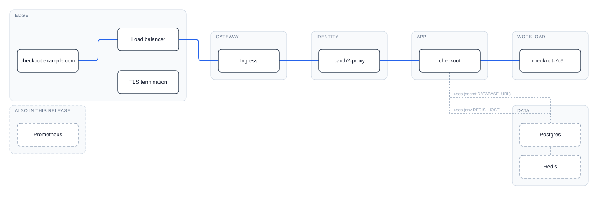

Agent Skill
· SKILL.md · v0.11.0
honest-arch-
diagrams
Architecture diagrams that only draw
what they can prove.
Verified path
every hop backed by evidence
Inferred companions
dashed, evidence on the edge
Never invented
omitted means absent, not guessed
